Sun-Spotted Gloopie
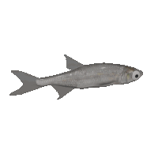
Loves nibbling toes. Also loves toes. (<2m)

Loves nibbling toes. Also loves toes. (<2m)

Known for breaking it down 'silly style.' (10m)
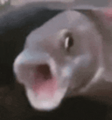
In a state of constant surprise. (25m)

Its true, its true! And the other thing is, my sister had a baby and I took it over after she passed away and the baby lost all its legs and arms and now its just a stump but I take care of it with my wife and... and its growing and its fairly happy... and its difficult because I'm working a second shift at the factory to put food on the table but all the love that I see in that little guy's face it makes it worth it in the end. True story. (50m)
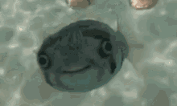
He's just a lil guy! (60m)
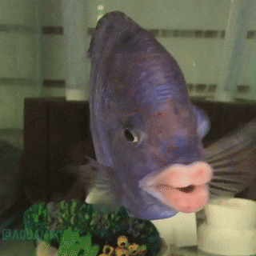
Quite the kisser. (69m)
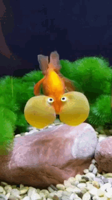
Manmade breed of goldfish designed for the sole purpose of looking silly. (100m)
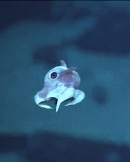
Deepest known species of octopus, also funny-looking. (1000m)
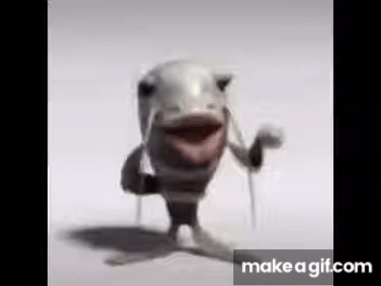
Not much is known of the Muck-Scumming Jigfish. I'd steer clear of this guy. (1200m)
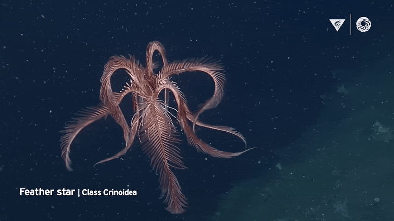
This thing looks neat. more research is needed. (1500m)
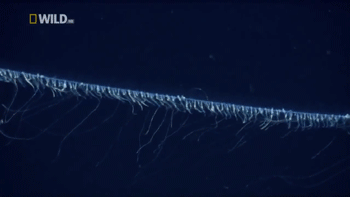
Long ass creature(s?). A colony of sorts but also one creature? (2000m)
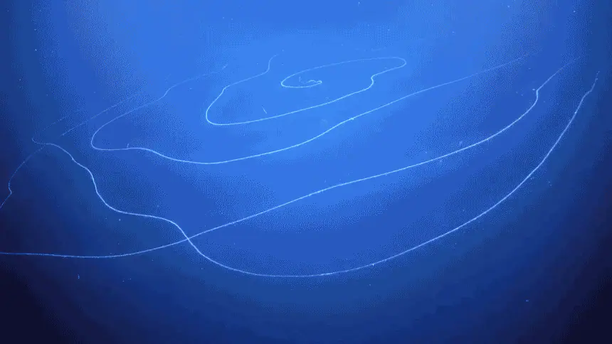
Longer and cooler. It must live deeper. (>2000m)
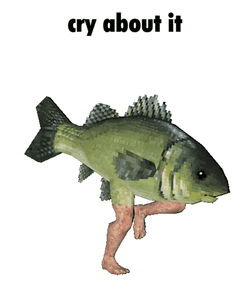
If you see one, it's too late. All you can do is pray it will grant you a quick, merciful end. (>13500m)